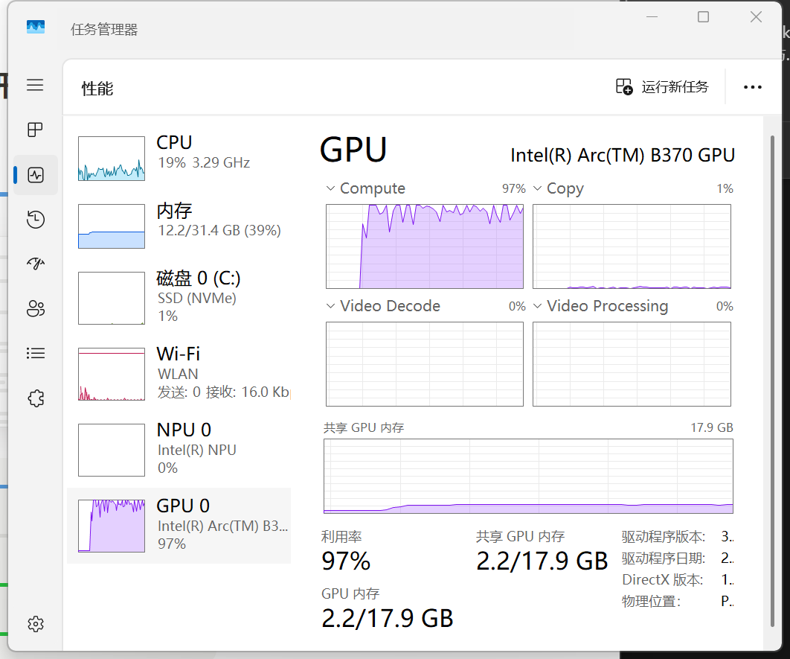
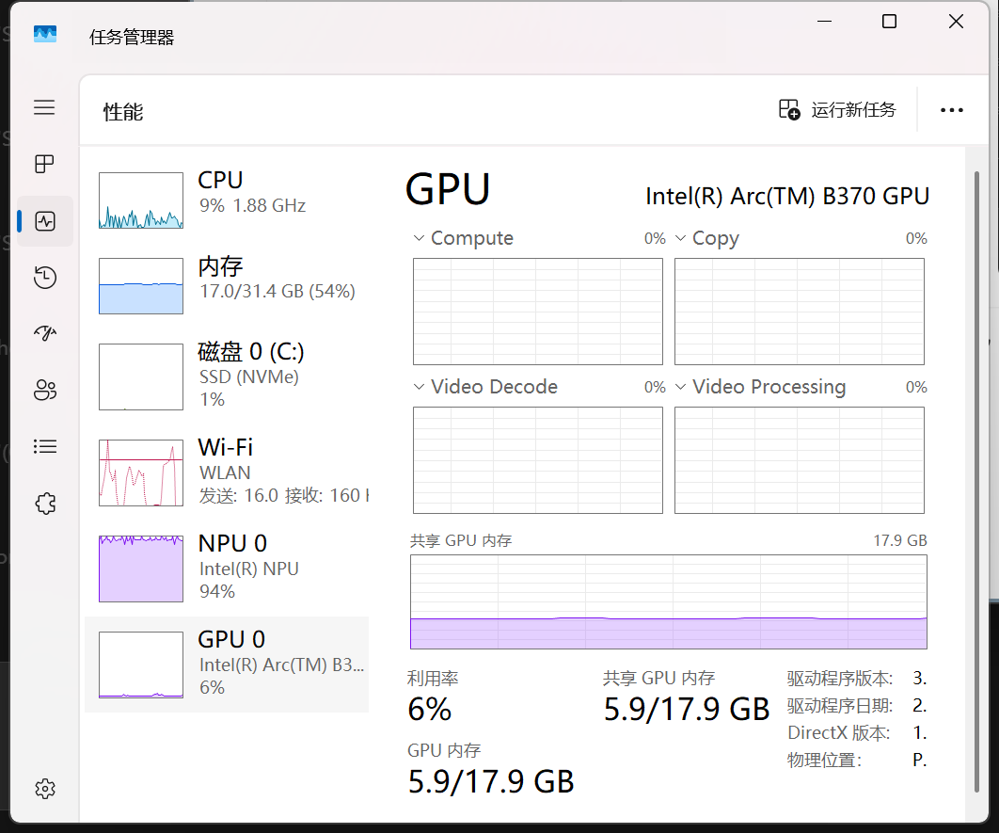

Xiong 等人[100]……提出了基于 HMN 的 DCN 模型，并通过实验证明，HMN 模块可以使模型在 SQuAD1.1 数据集上的 F1 值提高 5.5%。
原文表 2：用 HMN，F1 75.6
换成两层 MLP，F1 74.4
实际只差 1.2


论断 54 句，被引片段 98 段，参考文献 55 条。其中出自稿件的文字 5,910 字，包括带引用的论断句。
隐私模式已开启，稿件自身的文字只在本机处理。
2014 年 He 等人[20]提出了空间金字塔网络（Spatial Pyramid Pooling Network，SPP-Net）检测算法，它在 CNN 最后一层卷积层和全连接层之间加入 SPP 层，使得网络能够输入任意尺度的候选区域……
167 字，支持度判断，发送 2 次2014 年，Girshick 等人[15]成功将卷积神经网络（Convolutional Neural Networks，CNN[16]）运用在目标检测领域中，提出了 R-CNN 算法……
237 字，支持度判断，发送 5 次开启后，错别字检查、引用功能分类、参考文献结构化、论断抽取和期刊画像只用本机模型运行，表述作者自身贡献的论断只在本机判断，向量检索只用本机模型。云端只收到带引用的论断句、被引文献的原文片段和参考文献条目，题目、摘要、章节标题和图表题注留在本机。每次体检实际发送了什么，报告开头的发往云端一行可以展开查看。